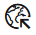

×
Welcome to Lassen Volcanic National Park. Here you can explore our trails and campsites.
You can also add points of interests for yourself and other guests of the park. You can begin by
clicking the "Add point of interest" button 
on the left and follow the prompts.